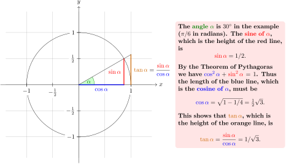
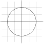
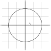
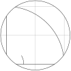
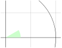
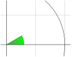
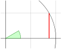
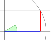
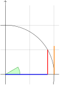
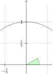

The TikZ and PGF Packages
Manual for version 3.1.9a
Tutorials and Guidelines
2 Tutorial: A Picture for Karl’s Students
This tutorial is intended for new users of TikZ. It does not give an exhaustive account of all the features of TikZ, just of those that you are likely to use right away.
Karl is a math and chemistry high-school teacher. He used to create the graphics in his worksheets and exams using LaTeX’s {picture} environment. While the results were acceptable, creating the graphics often turned out to be a lengthy process. Also, there tended to be problems with lines having slightly wrong angles and circles also seemed to be hard to get right. Naturally, his students could not care less whether the lines had the exact right angles and they find Karl’s exams too difficult no matter how nicely they were drawn. But Karl was never entirely satisfied with the result.
Karl’s son, who was even less satisfied with the results (he did not have to take the exams, after all), told Karl that he might wish to try out a new package for creating graphics. A bit confusingly, this package seems to have two names: First, Karl had to download and install a package called pgf. Then it turns out that inside this package there is another package called TikZ, which is supposed to stand for “TikZ ist kein Zeichenprogramm”. Karl finds this all a bit strange and TikZ seems to indicate that the package does not do what he needs. However, having used gnu software for quite some time and “gnu not being Unix”, there seems to be hope yet. His son assures him that TikZ’s name is intended to warn people that TikZ is not a program that you can use to draw graphics with your mouse or tablet. Rather, it is more like a “graphics language”.
2.1 Problem Statement¶
Karl wants to put a graphic on the next worksheet for his students. He is currently teaching his students about sine and cosine. What he would like to have is something that looks like this (ideally): 
2.2 Setting up the Environment¶
In TikZ, to draw a picture, at the start of the picture you need to tell TeX or LaTeX that you want to start a picture. In LaTeX this is done using the environment {tikzpicture}, in plain TeX you just use \tikzpicture to start the picture and \endtikzpicture to end it.
2.2.1 Setting up the Environment in LaTeX¶
Karl, being a LaTeX user, thus sets up his file as follows:
\documentclass{article} % say
\usepackage{tikz}
\begin{document}
We
are
working
on
\begin{tikzpicture}
\draw (-1.5,0) --
(1.5,0);
\draw (0,-1.5) --
(0,1.5);
\end{tikzpicture}.
\end{document}
When executed, that is, run via pdflatex or via latex followed by dvips, the resulting will contain something that looks like this:
We are working on.
We
are
working
on
\begin{tikzpicture}
\draw (-1.5,0) --
(1.5,0);
\draw (0,-1.5) --
(0,1.5);
\end{tikzpicture}.
Admittedly, not quite the whole picture, yet, but we do have the axes established. Well, not quite, but we have the lines that make up the axes drawn. Karl suddenly has a sinking feeling that the picture is still some way off.
Let’s have a more detailed look at the code. First, the package tikz is loaded. This package is a so-called “frontend” to the basic pgf system. The basic layer, which is also described in this manual, is somewhat more, well, basic and thus harder to use. The frontend makes things easier by providing a simpler syntax.
Inside the environment there are two \draw commands. They mean: “The path, which is specified following the command up to the semicolon, should be drawn.” The first path is specified as (-1.5,0) -- (1.5,0), which means “a straight line from the point at position \((-1.5,0)\) to the point at position \((1.5,0)\)”. Here, the positions are specified within a special coordinate system in which, initially, one unit is 1cm.
Karl is quite pleased to note that the environment automatically reserves enough space to encompass the picture.
2.2.2 Setting up the Environment in Plain TeX¶
Karl’s wife Gerda, who also happens to be a math teacher, is not a LaTeX user, but uses plain TeX since she prefers to do things “the old way”. She can also use TikZ. Instead of \usepackage{tikz} she has to write \input tikz.tex and instead of \begin{tikzpicture} she writes \tikzpicture and instead of \end{tikzpicture} she writes \endtikzpicture.
Thus, she would use:
%% Plain TeX file
\input tikz.tex
\baselineskip=12pt
\hsize=6.3truein
\vsize=8.7truein
We
are
working
on
\tikzpicture
\draw (-1.5,0) --
(1.5,0);
\draw (0,-1.5) --
(0,1.5);
\endtikzpicture.
\bye
Gerda can typeset this file using either pdftex or tex together with dvips. TikZ will automatically discern which driver she is using. If she wishes to use dvipdfm together with tex, she either needs to modify the file pgf.cfg or can write \def\pgfsysdriver{pgfsys-dvipdfm.def} somewhere before she inputs tikz.tex or pgf.tex.
2.2.3 Setting up the Environment in ConTeXt¶
Karl’s uncle Hans uses ConTeXt. Like Gerda, Hans can also use TikZ. Instead of \usepackage{tikz} he says \usemodule[tikz]. Instead of \begin{tikzpicture} he writes \starttikzpicture and instead of \end{tikzpicture} he writes \stoptikzpicture.
His version of the example looks like this:
%% ConTeXt file
\usemodule[tikz]
\starttext
We
are
working
on
\starttikzpicture
\draw (-1.5,0) --
(1.5,0);
\draw (0,-1.5) --
(0,1.5);
\stoptikzpicture.
\stoptext
Hans will now typeset this file in the usual way using texexec or context.
2.3 Straight Path Construction¶
The basic building block of all pictures in TikZ is the path. A path is a series of straight lines and curves that are connected (that is not the whole picture, but let us ignore the complications for the moment). You start a path by specifying the coordinates of the start position as a point in round brackets, as in (0,0). This is followed by a series of “path extension operations”. The simplest is --, which we used already. It must be followed by another coordinate and it extends the path in a straight line to this new position. For example, if we were to turn the two paths of the axes into one path, the following would result:

\tikz \draw (-1.5,0) --
(1.5,0) --
(0,-1.5) --
(0,1.5);
Karl is a bit confused by the fact that there is no
{tikzpicture} environment, here.
Instead, the little command \tikz is
used. This command either takes one argument (starting with an
opening brace as in
\tikz{\draw (0,0) -- (1.5,0)}, which
yields
 ) or collects everything up to the next semicolon and puts it
inside a {tikzpicture} environment. As a
rule of thumb, all TikZ graphic drawing commands must occur
as an argument of \tikz or inside a
{tikzpicture} environment. Fortunately,
the command \draw will only be defined
inside this environment, so there is little chance that you will
accidentally do something wrong here.
) or collects everything up to the next semicolon and puts it
inside a {tikzpicture} environment. As a
rule of thumb, all TikZ graphic drawing commands must occur
as an argument of \tikz or inside a
{tikzpicture} environment. Fortunately,
the command \draw will only be defined
inside this environment, so there is little chance that you will
accidentally do something wrong here.
2.4 Curved Path Construction¶
The next thing Karl wants to do is to draw the circle. For this, straight lines obviously will not do. Instead, we need some way to draw curves. For this, TikZ provides a special syntax. One or two “control points” are needed. The math behind them is not quite trivial, but here is the basic idea: Suppose you are at point \(x\) and the first control point is \(y\). Then the curve will start “going in the direction of \(y\) at \(x\)”, that is, the tangent of the curve at \(x\) will point toward \(y\). Next, suppose the curve should end at \(z\) and the second support point is \(w\). Then the curve will, indeed, end at \(z\) and the tangent of the curve at point \(z\) will go through \(w\).
Here is an example (the control points have been added for clarity):

\begin{tikzpicture}
\filldraw [gray] (0,0) circle
[radius=2pt]
(1,1) circle
[radius=2pt]
(2,1) circle
[radius=2pt]
(2,0) circle
[radius=2pt];
\draw (0,0) .. controls
(1,1) and
(2,1) .. (2,0);
\end{tikzpicture}
The general syntax for extending a path in a “curved” way is .. controls ⟨first control point⟩ and ⟨second control point⟩ .. ⟨end point⟩. You can leave out the and ⟨second control point⟩, which causes the first one to be used twice.
So, Karl can now add the first half circle to the picture:
\begin{tikzpicture}
\draw (-1.5,0) --
(1.5,0);
\draw (0,-1.5) --
(0,1.5);
\draw (-1,0) .. controls
(-1,0.555) and
(-0.555,1) .. (0,1)
.. controls
(0.555,1) and
(1,0.555) .. (1,0);
\end{tikzpicture}
Karl is happy with the result, but finds specifying circles in this way to be extremely awkward. Fortunately, there is a much simpler way.
2.5 Circle Path Construction¶
In order to draw a circle, the path construction operation circle can be used. This operation is followed by a radius in brackets as in the following example: (Note that the previous position is used as the center of the circle.)

\tikz \draw (0,0) circle
[radius=10pt];
You can also append an ellipse to the path using the ellipse operation. Instead of a single radius you can specify two of them:

\tikz \draw (0,0) ellipse
[x radius=20pt, y radius=10pt];
To draw an ellipse whose axes are not horizontal and vertical, but
point in an arbitrary direction (a “turned ellipse” like
 ) you can use transformations, which are explained later. The code
for the little ellipse is
\tikz \draw[rotate=30] (0,0) ellipse [x radius=6pt, y
radius=3pt];, by the way.
) you can use transformations, which are explained later. The code
for the little ellipse is
\tikz \draw[rotate=30] (0,0) ellipse [x radius=6pt, y
radius=3pt];, by the way.
So, returning to Karl’s problem, he can write \draw (0,0) circle [radius=1cm]; to draw the circle:
\begin{tikzpicture}
\draw (-1.5,0) --
(1.5,0);
\draw (0,-1.5) --
(0,1.5);
\draw (0,0) circle
[radius=1cm];
\end{tikzpicture}
At this point, Karl is a bit alarmed that the circle is so small when he wants the final picture to be much bigger. He is pleased to learn that TikZ has powerful transformation options and scaling everything by a factor of three is very easy. But let us leave the size as it is for the moment to save some space.
2.6 Rectangle Path Construction¶
The next things we would like to have is the grid in the background. There are several ways to produce it. For example, one might draw lots of rectangles. Since rectangles are so common, there is a special syntax for them: To add a rectangle to the current path, use the rectangle path construction operation. This operation should be followed by another coordinate and will append a rectangle to the path such that the previous coordinate and the next coordinates are corners of the rectangle. So, let us add two rectangles to the picture:
\begin{tikzpicture}
\draw (-1.5,0) --
(1.5,0);
\draw (0,-1.5) --
(0,1.5);
\draw (0,0) circle
[radius=1cm];
\draw (0,0) rectangle
(0.5,0.5);
\draw (-0.5,-0.5) rectangle
(-1,-1);
\end{tikzpicture}
While this may be nice in other situations, this is not really leading anywhere with Karl’s problem: First, we would need an awful lot of these rectangles and then there is the border that is not “closed”.
So, Karl is about to resort to simply drawing four vertical and four horizontal lines using the nice \draw command, when he learns that there is a grid path construction operation.
2.7 Grid Path Construction¶
The grid path operation adds a grid to the current path. It will add lines making up a grid that fills the rectangle whose one corner is the current point and whose other corner is the point following the grid operation. For example, the code \tikz \draw[step=2pt] (0,0) grid (10pt,10pt); produces . Note how the optional argument for \draw can be used to specify a grid width (there are also xstep and ystep to define the steppings independently). As Karl will learn soon, there are lots of things that can be influenced using such options.
For Karl, the following code could be used:

\begin{tikzpicture}
\draw (-1.5,0) --
(1.5,0);
\draw (0,-1.5) --
(0,1.5);
\draw (0,0) circle
[radius=1cm];
\draw[step=.5cm] (-1.4,-1.4) grid
(1.4,1.4);
\end{tikzpicture}
Having another look at the desired picture, Karl notices that it would be nice for the grid to be more subdued. (His son told him that grids tend to be distracting if they are not subdued.) To subdue the grid, Karl adds two more options to the \draw command that draws the grid. First, he uses the color gray for the grid lines. Second, he reduces the line width to very thin. Finally, he swaps the ordering of the commands so that the grid is drawn first and everything else on top.

\begin{tikzpicture}
\draw[step=.5cm,gray,very thin] (-1.4,-1.4) grid
(1.4,1.4);
\draw (-1.5,0) --
(1.5,0);
\draw (0,-1.5) --
(0,1.5);
\draw (0,0) circle
[radius=1cm];
\end{tikzpicture}
2.8 Adding a Touch of Style¶
Instead of the options gray,very thin Karl could also have said help lines. Styles are predefined sets of options that can be used to organize how a graphic is drawn. By saying help lines you say “use the style that I (or someone else) has set for drawing help lines”. If Karl decides, at some later point, that grids should be drawn, say, using the color blue!50 instead of gray, he could provide the following option somewhere:
help
lines/.style={color=blue!50,very
thin}
The effect of this “style setter” is that in the current scope or environment the help lines option has the same effect as color=blue!50,very thin.
Using styles makes your graphics code more flexible. You can change the way things look easily in a consistent manner. Normally, styles are defined at the beginning of a picture. However, you may sometimes wish to define a style globally, so that all pictures of your document can use this style. Then you can easily change the way all graphics look by changing this one style. In this situation you can use the \tikzset command at the beginning of the document as in
\tikzset{help lines/.style=very thin}
To build a hierarchy of styles you can have one style use another. So in order to define a style Karl's grid that is based on the grid style Karl could say
\tikzset{Karl's grid/.style={help lines,color=blue!50}}
...
\draw[Karl's grid] (0,0) grid
(5,5);
Styles are made even more powerful by parametrization. This means that, like other options, styles can also be used with a parameter. For instance, Karl could parameterize his grid so that, by default, it is blue, but he could also use another color.
\begin{tikzpicture}
[Karl's grid/.style ={help lines,color=#1!50},
Karl's grid/.default=blue]
\draw[Karl's grid] (0,0) grid
(1.5,2);
\draw[Karl's grid=red] (2,0) grid
(3.5,2);
\end{tikzpicture}
In this example, the definition of the style Karl's grid is given as an optional argument to the {tikzpicture} environment. Additional styles for other elements would follow after a comma. With many styles in effect, the optional argument of the environment may easily happen to be longer than the actual contents.
2.9 Drawing Options¶
Karl wonders what other options there are that influence how a path is drawn. He saw already that the color=⟨color⟩ option can be used to set the line’s color. The option draw=⟨color⟩ does nearly the same, only it sets the color for the lines only and a different color can be used for filling (Karl will need this when he fills the arc for the angle).
He saw that the style very thin yields very thin lines. Karl is not really surprised by this and neither is he surprised to learn that thin yields thin lines, thick yields thick lines, very thick yields very thick lines, ultra thick yields really, really thick lines and ultra thin yields lines that are so thin that low-resolution printers and displays will have trouble showing them. He wonders what gives lines of “normal” thickness. It turns out that thin is the correct choice, since it gives the same thickness as TeX’s \hrule command. Nevertheless, Karl would like to know whether there is anything “in the middle” between thin and thick. There is: semithick.
Another useful thing one can do with lines is to dash or dot them.
For this, the two styles dashed and
dotted can be used, yielding
and
 . Both options also exist in a loose and a dense version, called
loosely dashed,
densely dashed,
loosely dotted, and
densely dotted. If he really, really
needs to, Karl can also define much more complex dashing patterns
with the dash pattern option, but his
son insists that dashing is to be used with utmost care and mostly
distracts. Karl’s son claims that complicated dashing patterns
are evil. Karl’s students do not care about dashing patterns.
. Both options also exist in a loose and a dense version, called
loosely dashed,
densely dashed,
loosely dotted, and
densely dotted. If he really, really
needs to, Karl can also define much more complex dashing patterns
with the dash pattern option, but his
son insists that dashing is to be used with utmost care and mostly
distracts. Karl’s son claims that complicated dashing patterns
are evil. Karl’s students do not care about dashing patterns.
2.10 Arc Path Construction¶
Our next obstacle is to draw the arc for the angle. For this, the arc path construction operation is useful, which draws part of a circle or ellipse. This arc operation is followed by options in brackets that specify the arc. An example would be arc[start angle=10, end angle=80, radius=10pt], which means exactly what it says. Karl obviously needs an arc from \(0^\circ \) to \(30^\circ \). The radius should be something relatively small, perhaps around one third of the circle’s radius. When one uses the arc path construction operation, the specified arc will be added with its starting point at the current position. So, we first have to “get there”.

\begin{tikzpicture}
\draw[step=.5cm,gray,very thin] (-1.4,-1.4) grid
(1.4,1.4);
\draw (-1.5,0) --
(1.5,0);
\draw (0,-1.5) --
(0,1.5);
\draw (0,0) circle
[radius=1cm];
\draw (3mm,0mm) arc
[start angle=0, end angle=30, radius=3mm];
\end{tikzpicture}
Karl thinks this is really a bit small and he cannot continue unless he learns how to do scaling. For this, he can add the [scale=3] option. He could add this option to each \draw command, but that would be awkward. Instead, he adds it to the whole environment, which causes this option to apply to everything within.

\begin{tikzpicture}[scale=3]
\draw[step=.5cm,gray,very thin] (-1.4,-1.4) grid
(1.4,1.4);
\draw (-1.5,0) --
(1.5,0);
\draw (0,-1.5) --
(0,1.5);
\draw (0,0) circle
[radius=1cm];
\draw (3mm,0mm) arc
[start angle=0, end angle=30, radius=3mm];
\end{tikzpicture}
As for circles, you can specify “two” radii in order to get an elliptical arc.

\tikz \draw (0,0)
arc
[start angle=0, end angle=315,
x radius=1.75cm, y radius=1cm];
2.11 Clipping a Path¶
In order to save space in this manual, it would be nice to clip Karl’s graphics a bit so that we can focus on the “interesting” parts. Clipping is pretty easy in TikZ. You can use the \clip command to clip all subsequent drawing. It works like \draw, only it does not draw anything, but uses the given path to clip everything subsequently.

\begin{tikzpicture}[scale=3]
\clip (-0.1,-0.2) rectangle
(1.1,0.75);
\draw[step=.5cm,gray,very thin] (-1.4,-1.4) grid
(1.4,1.4);
\draw (-1.5,0) --
(1.5,0);
\draw (0,-1.5) --
(0,1.5);
\draw (0,0) circle
[radius=1cm];
\draw (3mm,0mm) arc
[start angle=0, end angle=30, radius=3mm];
\end{tikzpicture}
You can also do both at the same time: Draw and clip a path. For this, use the \draw command and add the clip option. (This is not the whole picture: You can also use the \clip command and add the draw option. Well, that is also not the whole picture: In reality, \draw is just a shorthand for \path[draw] and \clip is a shorthand for \path[clip] and you could also say \path[draw,clip].) Here is an example:

\begin{tikzpicture}[scale=3]
\clip[draw] (0.5,0.5) circle
(.6cm);
\draw[step=.5cm,gray,very thin] (-1.4,-1.4) grid
(1.4,1.4);
\draw (-1.5,0) --
(1.5,0);
\draw (0,-1.5) --
(0,1.5);
\draw (0,0) circle
[radius=1cm];
\draw (3mm,0mm) arc
[start angle=0, end angle=30, radius=3mm];
\end{tikzpicture}
2.12 Parabola and Sine Path Construction¶
Although Karl does not need them for his picture, he is pleased to learn that there are parabola and sin and cos path operations for adding parabolas and sine and cosine curves to the current path. For the parabola operation, the current point will lie on the parabola as well as the point given after the parabola operation. Consider the following example:
\tikz \draw (0,0) rectangle
(1,1) (0,0) parabola
(1,1);
It is also possible to place the bend somewhere else:
\tikz \draw[x=1pt,y=1pt] (0,0) parabola
bend
(4,16) (6,12);
The operations sin and cos add a sine or cosine curve in the interval \([0,\pi /2]\) such that the previous current point is at the start of the curve and the curve ends at the given end point. Here are two examples:
A sine
 curve.
curve.
A
sine
\tikz \draw[x=1ex,y=1ex] (0,0) sin
(1.57,1); curve.

\tikz \draw[x=1.57ex,y=1ex] (0,0) sin
(1,1) cos
(2,0) sin
(3,-1) cos
(4,0)
(0,1) cos
(1,0) sin
(2,-1) cos
(3,0) sin
(4,1);
2.13 Filling and Drawing¶
Returning to the picture, Karl now wants the angle to be “filled” with a very light green. For this he uses \fill instead of \draw. Here is what Karl does:

\begin{tikzpicture}[scale=3]
\clip (-0.1,-0.2) rectangle
(1.1,0.75);
\draw[step=.5cm,gray,very thin] (-1.4,-1.4) grid
(1.4,1.4);
\draw (-1.5,0) --
(1.5,0);
\draw (0,-1.5) --
(0,1.5);
\draw (0,0) circle
[radius=1cm];
\fill[green!20!white] (0,0) --
(3mm,0mm)
arc
[start angle=0, end angle=30, radius=3mm] --
(0,0);
\end{tikzpicture}
The color green!20!white means 20% green and 80% white mixed together. Such color expression are possible since TikZ uses Uwe Kern’s xcolor package, see the documentation of that package for details on color expressions.
What would have happened, if Karl had not “closed” the path using --(0,0) at the end? In this case, the path is closed automatically, so this could have been omitted. Indeed, it would even have been better to write the following, instead:
\fill[green!20!white] (0,0) --
(3mm,0mm)
arc
[start angle=0, end angle=30, radius=3mm] --
cycle;
The --cycle causes the current path to be closed (actually the current part of the current path) by smoothly joining the first and last point. To appreciate the difference, consider the following example:
\begin{tikzpicture}[line width=5pt]
\draw (0,0) --
(1,0) --
(1,1) --
(0,0);
\draw (2,0) --
(3,0) --
(3,1) --
cycle;
\useasboundingbox (0,1.5); % make bounding box higher
\end{tikzpicture}
You can also fill and draw a path at the same time using the \filldraw command. This will first draw the path, then fill it. This may not seem too useful, but you can specify different colors to be used for filling and for stroking. These are specified as optional arguments like this:

\begin{tikzpicture}[scale=3]
\clip (-0.1,-0.2) rectangle
(1.1,0.75);
\draw[step=.5cm,gray,very thin] (-1.4,-1.4) grid
(1.4,1.4);
\draw (-1.5,0) --
(1.5,0);
\draw (0,-1.5) --
(0,1.5);
\draw (0,0) circle
[radius=1cm];
\filldraw[fill=green!20!white, draw=green!50!black] (0,0) --
(3mm,0mm)
arc
[start angle=0, end angle=30, radius=3mm] --
cycle;
\end{tikzpicture}
2.14 Shading¶
Karl briefly considers the possibility of making the angle “more fancy” by shading it. Instead of filling the area with a uniform color, a smooth transition between different colors is used. For this, \shade and \shadedraw, for shading and drawing at the same time, can be used:

\tikz \shade (0,0) rectangle
(2,1) (3,0.5) circle
(.5cm);
The default shading is a smooth transition from gray to white. To specify different colors, you can use options:
\begin{tikzpicture}[rounded corners,ultra thick]
\shade[top color=yellow,bottom color=black] (0,0) rectangle
+(2,1);
\shade[left color=yellow,right color=black] (3,0) rectangle
+(2,1);
\shadedraw[inner color=yellow,outer color=black,draw=yellow] (6,0) rectangle
+(2,1);
\shade[ball color=green] (9,.5) circle
(.5cm);
\end{tikzpicture}
For Karl, the following might be appropriate:

\begin{tikzpicture}[scale=3]
\clip (-0.1,-0.2) rectangle
(1.1,0.75);
\draw[step=.5cm,gray,very thin] (-1.4,-1.4) grid
(1.4,1.4);
\draw (-1.5,0) --
(1.5,0);
\draw (0,-1.5) --
(0,1.5);
\draw (0,0) circle
[radius=1cm];
\shadedraw[left color=gray,right color=green, draw=green!50!black]
(0,0) --
(3mm,0mm)
arc
[start angle=0, end angle=30, radius=3mm] --
cycle;
\end{tikzpicture}
However, he wisely decides that shadings usually only distract without adding anything to the picture.
2.15 Specifying Coordinates¶
Karl now wants to add the sine and cosine lines. He knows already that he can use the color= option to set the lines’ colors. So, what is the best way to specify the coordinates?
There are different ways of specifying coordinates. The easiest way is to say something like (10pt,2cm). This means 10pt in \(x\)-direction and 2cm in \(y\)-directions. Alternatively, you can also leave out the units as in (1,2), which means “one times the current \(x\)-vector plus twice the current \(y\)-vector”. These vectors default to 1cm in the \(x\)-direction and 1cm in the \(y\)-direction, respectively.
In order to specify points in polar coordinates, use the notation (30:1cm), which means 1cm in direction 30 degree. This is obviously quite useful to “get to the point \((\cos 30^\circ ,\sin 30^\circ )\) on the circle”.
You can add a single + sign in front of a coordinate or two of them as in +(0cm,1cm) or ++(2cm,0cm). Such coordinates are interpreted differently: The first form means “1cm upwards from the previous specified position” and the second means “2cm to the right of the previous specified position, making this the new specified position”. For example, we can draw the sine line as follows:

\begin{tikzpicture}[scale=3]
\clip (-0.1,-0.2) rectangle
(1.1,0.75);
\draw[step=.5cm,gray,very thin] (-1.4,-1.4) grid
(1.4,1.4);
\draw (-1.5,0) --
(1.5,0);
\draw (0,-1.5) --
(0,1.5);
\draw (0,0) circle
[radius=1cm];
\filldraw[fill=green!20,draw=green!50!black] (0,0) --
(3mm,0mm)
arc
[start angle=0, end angle=30, radius=3mm] --
cycle;
\draw[red,very thick] (30:1cm) --
+(0,-0.5);
\end{tikzpicture}
Karl used the fact \(\sin 30^\circ = 1/2\). However, he very much doubts that his students know this, so it would be nice to have a way of specifying “the point straight down from (30:1cm) that lies on the \(x\)-axis”. This is, indeed, possible using a special syntax: Karl can write (30:1cm |- 0,0). In general, the meaning of (⟨p⟩ |- ⟨q⟩) is “the intersection of a vertical line through \(p\) and a horizontal line through \(q\)”.
Next, let us draw the cosine line. One way would be to say (30:1cm |- 0,0) -- (0,0). Another way is the following: we “continue” from where the sine ends:

\begin{tikzpicture}[scale=3]
\clip (-0.1,-0.2) rectangle
(1.1,0.75);
\draw[step=.5cm,gray,very thin] (-1.4,-1.4) grid
(1.4,1.4);
\draw (-1.5,0) --
(1.5,0);
\draw (0,-1.5) --
(0,1.5);
\draw (0,0) circle
[radius=1cm];
\filldraw[fill=green!20,draw=green!50!black] (0,0) --
(3mm,0mm)
arc
[start angle=0, end angle=30, radius=3mm] --
cycle;
\draw[red,very thick] (30:1cm) --
+(0,-0.5);
\draw[blue,very thick] (30:1cm) ++(0,-0.5) --
(0,0);
\end{tikzpicture}
Note that there is no -- between (30:1cm) and ++(0,-0.5). In detail, this path is interpreted as follows: “First, the (30:1cm) tells me to move my pen to \((\cos 30^\circ ,1/2)\). Next, there comes another coordinate specification, so I move my pen there without drawing anything. This new point is half a unit down from the last position, thus it is at \((\cos 30^\circ ,0)\). Finally, I move the pen to the origin, but this time drawing something (because of the --).”
To appreciate the difference between + and ++ consider the following example:
\begin{tikzpicture}
\def\rectanglepath{--
++(1cm,0cm) --
++(0cm,1cm) --
++(-1cm,0cm) --
cycle}
\draw (0,0) \rectanglepath;
\draw (1.5,0) \rectanglepath;
\end{tikzpicture}
By comparison, when using a single +, the coordinates are different:

\begin{tikzpicture}
\def\rectanglepath{--
+(1cm,0cm) --
+(1cm,1cm) --
+(0cm,1cm) --
cycle}
\draw (0,0) \rectanglepath;
\draw (1.5,0) \rectanglepath;
\end{tikzpicture}
Naturally, all of this could have been written more clearly and more economically like this (either with a single or a double +):

\tikz \draw (0,0) rectangle
+(1,1) (1.5,0) rectangle
+(1,1);
2.16 Intersecting Paths¶
Karl is left with the line for \(\tan \alpha \), which seems difficult to specify using transformations and polar coordinates. The first – and easiest – thing he can do is so simply use the coordinate (1,{tan(30)}) since TikZ’s math engine knows how to compute things like tan(30). Note the added braces since, otherwise, TikZ’s parser would think that the first closing parenthesis ends the coordinate (in general, you need to add braces around components of coordinates when these components contain parentheses).
Karl can, however, also use a more elaborate, but also more “geometric” way of computing the length of the orange line: He can specify intersections of paths as coordinates. The line for \(\tan \alpha \) starts at \((1,0)\) and goes upward to a point that is at the intersection of a line going “up” and a line going from the origin through (30:1cm). Such computations are made available by the intersections library.
What Karl must do is to create two “invisible” paths that intersect at the position of interest. Creating paths that are not otherwise seen can be done using the \path command without any options like draw or fill. Then, Karl can add the name path option to the path for later reference. Once the paths have been constructed, Karl can use the name intersections to assign names to the coordinate for later reference.
\path [name path=upward line] (1,0) --
(1,1);
\path [name path=sloped line] (0,0) --
(30:1.5cm); % a bit longer, so that there is an intersection
% (add `\usetikzlibrary{intersections}' after loading tikz in
the preamble)
\draw [name intersections={of=upward line and sloped line, by=x}]
[very thick,orange] (1,0) --
(x);
2.17 Adding Arrow Tips¶
Karl now wants to add the little arrow tips at the end of the axes. He has noticed that in many plots, even in scientific journals, these arrow tips seem to be missing, presumably because the generating programs cannot produce them. Karl thinks arrow tips belong at the end of axes. His son agrees. His students do not care about arrow tips.
It turns out that adding arrow tips is pretty easy: Karl adds the option -> to the drawing commands for the axes:

\usetikzlibrary {intersections}
\begin{tikzpicture}[scale=3]
\clip (-0.1,-0.2) rectangle
(1.1,1.51);
\draw[step=.5cm,gray,very thin] (-1.4,-1.4) grid
(1.4,1.4);
\draw[->] (-1.5,0) --
(1.5,0);
\draw[->] (0,-1.5) --
(0,1.5);
\draw (0,0) circle
[radius=1cm];
\filldraw[fill=green!20,draw=green!50!black] (0,0) --
(3mm,0mm)
arc
[start angle=0, end angle=30, radius=3mm] --
cycle;
\draw[red,very thick] (30:1cm) --
+(0,-0.5);
\draw[blue,very thick] (30:1cm) ++(0,-0.5) --
(0,0);
\path [name path=upward line] (1,0) --
(1,1);
\path [name path=sloped line] (0,0) --
(30:1.5cm);
\draw [name intersections={of=upward line and sloped line, by=x}]
[very thick,orange] (1,0) --
(x);
\end{tikzpicture}
If Karl had used the option <- instead of ->, arrow tips would have been put at the beginning of the path. The option <-> puts arrow tips at both ends of the path.
There are certain restrictions to the kind of paths to which arrow tips can be added. As a rule of thumb, you can add arrow tips only to a single open “line”. For example, you cannot add tips to, say, a rectangle or a circle. However, you can add arrow tips to curved paths and to paths that have several segments, as in the following examples:
\begin{tikzpicture}
\draw [<->] (0,0) arc
[start angle=180, end angle=30, radius=10pt];
\draw [<->] (1,0) --
(1.5cm,10pt) --
(2cm,0pt) --
(2.5cm,10pt);
\end{tikzpicture}
Karl has a more detailed look at the arrow that TikZ puts
at the end. It looks like this when he zooms it:
 . The shape seems vaguely familiar and, indeed, this is exactly the
end of
TeX’s standard arrow used in something like \(f\colon A \to B\).
. The shape seems vaguely familiar and, indeed, this is exactly the
end of
TeX’s standard arrow used in something like \(f\colon A \to B\).
Karl likes the arrow, especially since it is not “as thick” as the arrows offered by many other packages. However, he expects that, sometimes, he might need to use some other kinds of arrow. To do so, Karl can say >=⟨kind of end arrow tip⟩, where ⟨kind of end arrow tip⟩ is a special arrow tip specification. For example, if Karl says >=Stealth, then he tells TikZ that he would like “stealth-fighter-like” arrow tips:

\usetikzlibrary {arrows.meta}
\begin{tikzpicture}[>=Stealth]
\draw [->] (0,0) arc
[start angle=180, end angle=30, radius=10pt];
\draw [<<-,very thick] (1,0) --
(1.5cm,10pt) --
(2cm,0pt) --
(2.5cm,10pt);
\end{tikzpicture}
Karl wonders whether such a military name for the arrow type is really necessary. He is not really mollified when his son tells him that Microsoft’s PowerPoint uses the same name. He decides to have his students discuss this at some point.
In addition to Stealth there are several other predefined kinds of arrow tips Karl can choose from, see Section ??. Furthermore, he can define arrows types himself, if he needs new ones.
2.18 Scoping¶
Karl saw already that there are numerous graphic options that affect how paths are rendered. Often, he would like to apply certain options to a whole set of graphic commands. For example, Karl might wish to draw three paths using a thick pen, but would like everything else to be drawn “normally”.
If Karl wishes to set a certain graphic option for the whole picture, he can simply pass this option to the \tikz command or to the {tikzpicture} environment (Gerda would pass the options to \tikzpicture and Hans passes them to \starttikzpicture). However, if Karl wants to apply graphic options to a local group, he put these commands inside a {scope} environment (Gerda uses \scope and \endscope, Hans uses \startscope and \stopscope). This environment takes graphic options as an optional argument and these options apply to everything inside the scope, but not to anything outside.
Here is an example:

\begin{tikzpicture}[ultra thick]
\draw (0,0) --
(0,1);
\begin{scope}[thin]
\draw (1,0) --
(1,1);
\draw (2,0) --
(2,1);
\end{scope}
\draw (3,0) --
(3,1);
\end{tikzpicture}
Scoping has another interesting effect: Any changes to the clipping area are local to the scope. Thus, if you say \clip somewhere inside a scope, the effect of the \clip command ends at the end of the scope. This is useful since there is no other way of “enlarging” the clipping area.
Karl has also already seen that giving options to commands like \draw apply only to that command. It turns out that the situation is slightly more complex. First, options to a command like \draw are not really options to the command, but they are “path options” and can be given anywhere on the path. So, instead of \draw[thin] (0,0) -- (1,0); one can also write \draw (0,0) [thin] -- (1,0); or \draw (0,0) -- (1,0) [thin];; all of these have the same effect. This might seem strange since in the last case, it would appear that the thin should take effect only “after” the line from \((0,0)\) to \((1,0)\) has been drawn. However, most graphic options only apply to the whole path. Indeed, if you say both thin and thick on the same path, the last option given will “win”.
When reading the above, Karl notices that only “most” graphic options apply to the whole path. Indeed, all transformation options do not apply to the whole path, but only to “everything following them on the path”. We will have a more detailed look at this in a moment. Nevertheless, all options given during a path construction apply only to this path.
2.19 Transformations¶
When you specify a coordinate like (1cm,1cm), where is that coordinate placed on the page? To determine the position, TikZ, TeX, and pdf or PostScript all apply certain transformations to the given coordinate in order to determine the final position on the page.
TikZ provides numerous options that allow you to transform coordinates in TikZ’s private coordinate system. For example, the xshift option allows you to shift all subsequent points by a certain amount:

\tikz \draw (0,0) --
(0,0.5) [xshift=2pt] (0,0) --
(0,0.5);
It is important to note that you can change transformation “in the middle of a path”, a feature that is not supported by pdf or PostScript. The reason is that TikZ keeps track of its own transformation matrix.
Here is a more complicated example:

\begin{tikzpicture}[even odd rule,rounded corners=2pt,x=10pt,y=10pt]
\filldraw[fill=yellow!80!black] (0,0) rectangle
(1,1)
[xshift=5pt,yshift=5pt] (0,0) rectangle
(1,1)
[rotate=30] (-1,-1) rectangle
(2,2);
\end{tikzpicture}
The most useful transformations are xshift and yshift for shifting, shift for shifting to a given point as in shift={(1,0)} or shift={+(0,0)} (the braces are necessary so that TeX does not mistake the comma for separating options), rotate for rotating by a certain angle (there is also a rotate around for rotating around a given point), scale for scaling by a certain factor, xscale and yscale for scaling only in the \(x\)- or \(y\)-direction (xscale=-1 is a flip), and xslant and yslant for slanting. If these transformation and those that I have not mentioned are not sufficient, the cm option allows you to apply an arbitrary transformation matrix. Karl’s students, by the way, do not know what a transformation matrix is.
2.20 Repeating Things: For-Loops¶
Karl’s next aim is to add little ticks on the axes at positions \(-1\), \(-1/2\), \(1/2\), and \(1\). For this, it would be nice to use some kind of “loop”, especially since he wishes to do the same thing at each of these positions. There are different packages for doing this. LaTeX has its own internal command for this, pstricks comes along with the powerful \multido command. All of these can be used together with TikZ, so if you are familiar with them, feel free to use them. TikZ introduces yet another command, called \foreach, which I introduced since I could never remember the syntax of the other packages. \foreach is defined in the package pgffor and can be used independently of TikZ, but TikZ includes it automatically.
In its basic form, the \foreach command is easy to use:

\foreach \x in
{1,2,3} {$x
=\x$, }
The general syntax is \foreach ⟨variable⟩ in {⟨list of values⟩} ⟨commands⟩. Inside the ⟨commands⟩, the ⟨variable⟩ will be assigned to the different values. If the ⟨commands⟩ do not start with a brace, everything up to the next semicolon is used as ⟨commands⟩.
For Karl and the ticks on the axes, he could use the following code:

\begin{tikzpicture}[scale=3]
\clip (-0.1,-0.2) rectangle
(1.1,1.51);
\draw[step=.5cm,gray,very thin] (-1.4,-1.4) grid
(1.4,1.4);
\filldraw[fill=green!20,draw=green!50!black] (0,0) --
(3mm,0mm)
arc
[start angle=0, end angle=30, radius=3mm] --
cycle;
\draw[->] (-1.5,0) --
(1.5,0);
\draw[->] (0,-1.5) --
(0,1.5);
\draw (0,0) circle
[radius=1cm];
\foreach \x in
{-1cm,-0.5cm,1cm}
\draw (\x,-1pt) --
(\x,1pt);
\foreach \y in
{-1cm,-0.5cm,0.5cm,1cm}
\draw (-1pt,\y) --
(1pt,\y);
\end{tikzpicture}
As a matter of fact, there are many different ways of creating the ticks. For example, Karl could have put the \draw ...; inside curly braces. He could also have used, say,
\foreach \x in
{-1,-0.5,1}
\draw[xshift=\x cm] (0pt,-1pt) --
(0pt,1pt);
Karl is curious what would happen in a more complicated situation where there are, say, 20 ticks. It seems bothersome to explicitly mention all these numbers in the set for \foreach. Indeed, it is possible to use ... inside the \foreach statement to iterate over a large number of values (which must, however, be dimensionless real numbers) as in the following example:
\tikz \foreach \x in
{1,...,10}
\draw (\x,0) circle
(0.4cm);
If you provide two numbers before the ..., the \foreach statement will use their difference for the stepping:
\tikz \foreach \x in
{-1,-0.5,...,1}
\draw (\x cm,-1pt) --
(\x cm,1pt);
We can also nest loops to create interesting effects:

\begin{tikzpicture}
\foreach \x in
{1,2,...,5,7,8,...,12}
\foreach \y in
{1,...,5}
{
\draw (\x,\y) +(-.5,-.5) rectangle
++(.5,.5);
\draw (\x,\y) node{\x,\y};
}
\end{tikzpicture}
The \foreach statement can do even trickier stuff, but the above gives the idea.
2.21 Adding Text¶
Karl is, by now, quite satisfied with the picture. However, the most important parts, namely the labels, are still missing!
TikZ offers an easy-to-use and powerful system for adding text and, more generally, complex shapes to a picture at specific positions. The basic idea is the following: When TikZ is constructing a path and encounters the keyword node in the middle of a path, it reads a node specification. The keyword node is typically followed by some options and then some text between curly braces. This text is put inside a normal TeX box (if the node specification directly follows a coordinate, which is usually the case, TikZ is able to perform some magic so that it is even possible to use verbatim text inside the boxes) and then placed at the current position, that is, at the last specified position (possibly shifted a bit, according to the given options). However, all nodes are drawn only after the path has been completely drawn/filled/shaded/clipped/whatever.

\begin{tikzpicture}
\draw (0,0) rectangle
(2,2);
\draw (0.5,0.5) node
[fill=yellow!80!black]
{Text
at
\texttt{node
1}}
--
(1.5,1.5) node
{Text
at
\texttt{node
2}};
\end{tikzpicture}
Obviously, Karl would not only like to place nodes on the last specified position, but also to the left or the right of these positions. For this, every node object that you put in your picture is equipped with several anchors. For example, the north anchor is in the middle at the upper end of the shape, the south anchor is at the bottom and the north east anchor is in the upper right corner. When you give the option anchor=north, the text will be placed such that this northern anchor will lie on the current position and the text is, thus, below the current position. Karl uses this to draw the ticks as follows:
\begin{tikzpicture}[scale=3]
\clip (-0.6,-0.2) rectangle
(0.6,1.51);
\draw[step=.5cm,help lines] (-1.4,-1.4) grid
(1.4,1.4);
\filldraw[fill=green!20,draw=green!50!black] (0,0) --
(3mm,0mm)
arc
[start angle=0, end angle=30, radius=3mm] --
cycle;
\draw[->] (-1.5,0) --
(1.5,0); \draw[->] (0,-1.5) --
(0,1.5);
\draw (0,0) circle
[radius=1cm];
\foreach \x in
{-1,-0.5,1}
\draw (\x cm,1pt) --
(\x cm,-1pt) node[anchor=north] {$\x$};
\foreach \y in
{-1,-0.5,0.5,1}
\draw (1pt,\y cm) --
(-1pt,\y cm) node[anchor=east] {$\y$};
\end{tikzpicture}
This is quite nice, already. Using these anchors, Karl can now add most of the other text elements. However, Karl thinks that, though “correct”, it is quite counter-intuitive that in order to place something below a given point, he has to use the north anchor. For this reason, there is an option called below, which does the same as anchor=north. Similarly, above right does the same as anchor=south west. In addition, below takes an optional dimension argument. If given, the shape will additionally be shifted downwards by the given amount. So, below=1pt can be used to put a text label below some point and, additionally shift it 1pt downwards.
Karl is not quite satisfied with the ticks. He would like to have \(1/2\) or \(\frac {1}{2}\) shown instead of \(0.5\), partly to show off the nice capabilities of TeX and TikZ, partly because for positions like \(1/3\) or \(\pi \) it is certainly very much preferable to have the “mathematical” tick there instead of just the “numeric” tick. His students, on the other hand, prefer \(0.5\) over \(1/2\) since they are not too fond of fractions in general.
Karl now faces a problem: For the \foreach statement, the position \x should still be given as 0.5 since TikZ will not know where \frac{1}{2} is supposed to be. On the other hand, the typeset text should really be \frac{1}{2}. To solve this problem, \foreach offers a special syntax: Instead of having one variable \x, Karl can specify two (or even more) variables separated by a slash as in \x / \xtext. Then, the elements in the set over which \foreach iterates must also be of the form ⟨first⟩/⟨second⟩. In each iteration, \x will be set to ⟨first⟩ and \xtext will be set to ⟨second⟩. If no ⟨second⟩ is given, the ⟨first⟩ will be used again. So, here is the new code for the ticks:

\begin{tikzpicture}[scale=3]
\clip (-0.6,-0.2) rectangle
(0.6,1.51);
\draw[step=.5cm,help lines] (-1.4,-1.4) grid
(1.4,1.4);
\filldraw[fill=green!20,draw=green!50!black] (0,0) --
(3mm,0mm)
arc
[start angle=0, end angle=30, radius=3mm] --
cycle;
\draw[->] (-1.5,0) --
(1.5,0); \draw[->] (0,-1.5) --
(0,1.5);
\draw (0,0) circle
[radius=1cm];
\foreach \x/\xtext in
{-1, -0.5/-\frac{1}{2}, 1}
\draw (\x cm,1pt) --
(\x cm,-1pt) node[anchor=north] {$\xtext$};
\foreach \y/\ytext in
{-1, -0.5/-\frac{1}{2}, 0.5/\frac{1}{2}, 1}
\draw (1pt,\y cm) --
(-1pt,\y cm) node[anchor=east] {$\ytext$};
\end{tikzpicture}
Karl is quite pleased with the result, but his son points out that this is still not perfectly satisfactory: The grid and the circle interfere with the numbers and decrease their legibility. Karl is not very concerned by this (his students do not even notice), but his son insists that there is an easy solution: Karl can add the [fill=white] option to fill out the background of the text shape with a white color.
The next thing Karl wants to do is to add the labels like \(\sin \alpha \). For this, he would like to place a label “in the middle of the line”. To do so, instead of specifying the label node {$\sin\alpha$} directly after one of the endpoints of the line (which would place the label at that endpoint), Karl can give the label directly after the --, before the coordinate. By default, this places the label in the middle of the line, but the pos= options can be used to modify this. Also, options like near start and near end can be used to modify this position:

\usetikzlibrary {intersections}
\begin{tikzpicture}[scale=3]
\clip (-2,-0.2) rectangle
(2,0.8);
\draw[step=.5cm,gray,very thin] (-1.4,-1.4) grid
(1.4,1.4);
\filldraw[fill=green!20,draw=green!50!black] (0,0) --
(3mm,0mm)
arc
[start angle=0, end angle=30, radius=3mm] --
cycle;
\draw[->] (-1.5,0) --
(1.5,0) coordinate
(x axis);
\draw[->] (0,-1.5) --
(0,1.5) coordinate
(y axis);
\draw (0,0) circle
[radius=1cm];
\draw[very thick,red]
(30:1cm) --
node[left=1pt,fill=white] {$\sin \alpha$} (30:1cm |- x axis);
\draw[very thick,blue]
(30:1cm |- x axis) --
node[below=2pt,fill=white] {$\cos \alpha$} (0,0);
\path [name path=upward line] (1,0) --
(1,1);
\path [name path=sloped line] (0,0) --
(30:1.5cm);
\draw [name intersections={of=upward line and sloped line, by=t}]
[very thick,orange] (1,0) --
node
[right=1pt,fill=white]
{$\displaystyle \tan \alpha \color{black}=
\frac{{\color{red}\sin \alpha}}{\color{blue}\cos \alpha}$} (t);
\draw (0,0) --
(t);
\foreach \x/\xtext in
{-1, -0.5/-\frac{1}{2}, 1}
\draw (\x cm,1pt) --
(\x cm,-1pt) node[anchor=north,fill=white] {$\xtext$};
\foreach \y/\ytext in
{-1, -0.5/-\frac{1}{2}, 0.5/\frac{1}{2}, 1}
\draw (1pt,\y cm) --
(-1pt,\y cm) node[anchor=east,fill=white] {$\ytext$};
\end{tikzpicture}
You can also position labels on curves and, by adding the sloped option, have them rotated such that they match the line’s slope. Here is an example:
\begin{tikzpicture}
\draw (0,0) .. controls
(6,1) and
(9,1) ..
node[near start,sloped,above] {near
start}
node
{midway}
node[very near end,sloped,below] {very
near
end} (12,0);
\end{tikzpicture}
It remains to draw the explanatory text at the right of the picture. The main difficulty here lies in limiting the width of the text “label”, which is quite long, so that line breaking is used. Fortunately, Karl can use the option text width=6cm to get the desired effect. So, here is the full code:
\begin{tikzpicture}
[scale=3,line cap=round,
% Styles
axes/.style=,
important line/.style={very thick},
information text/.style={rounded corners,fill=red!10,inner sep=1ex}]
% Colors
\colorlet{anglecolor}{green!50!black}
\colorlet{sincolor}{red}
\colorlet{tancolor}{orange!80!black}
\colorlet{coscolor}{blue}
% The graphic
\draw[help lines,step=0.5cm] (-1.4,-1.4) grid
(1.4,1.4);
\draw (0,0) circle
[radius=1cm];
\begin{scope}[axes]
\draw[->] (-1.5,0) --
(1.5,0) node[right] {$x$} coordinate(x axis);
\draw[->] (0,-1.5) --
(0,1.5) node[above] {$y$} coordinate(y axis);
\foreach \x/\xtext in
{-1, -.5/-\frac{1}{2}, 1}
\draw[xshift=\x cm] (0pt,1pt) --
(0pt,-1pt) node[below,fill=white] {$\xtext$};
\foreach \y/\ytext in
{-1, -.5/-\frac{1}{2}, .5/\frac{1}{2}, 1}
\draw[yshift=\y cm] (1pt,0pt) --
(-1pt,0pt) node[left,fill=white] {$\ytext$};
\end{scope}
\filldraw[fill=green!20,draw=anglecolor] (0,0) --
(3mm,0pt)
arc
[start angle=0, end angle=30, radius=3mm];
\draw (15:2mm) node[anglecolor] {$\alpha$};
\draw[important line,sincolor]
(30:1cm) --
node[left=1pt,fill=white] {$\sin \alpha$} (30:1cm |- x axis);
\draw[important line,coscolor]
(30:1cm |- x axis) --
node[below=2pt,fill=white] {$\cos \alpha$} (0,0);
\path [name path=upward line] (1,0) --
(1,1);
\path [name path=sloped line] (0,0) --
(30:1.5cm);
\draw [name intersections={of=upward line and sloped line, by=t}]
[very thick,orange] (1,0) --
node
[right=1pt,fill=white]
{$\displaystyle \tan \alpha \color{black}=
\frac{{\color{red}\sin \alpha}}{\color{blue}\cos \alpha}$} (t);
\draw (0,0) --
(t);
\draw[xshift=1.85cm]
node[right,text width=6cm,information text]
{
The
{\color{anglecolor} angle
$\alpha$} is
$30^\circ$
in
the
example
($\pi/6$ in radians). The
{\color{sincolor}sine
of
$\alpha$}, which
is
the
height
of
the
red
line, is
\[
{\color{sincolor} \sin \alpha} =
1/2.
\]
By
the
Theorem
of
Pythagoras
...
};
\end{tikzpicture}
2.22 Pics: The Angle Revisited¶
Karl expects that the code of certain parts of the picture he created might be so useful that he might wish to reuse them in the future. A natural thing to do is to create TeX macros that store the code he wishes to reuse. However, TikZ offers another way that is integrated directly into its parser: pics!
A “pic” is “not quite a full picture”, hence the short name. The idea is that a pic is simply some code that you can add to a picture at different places using the pic command whose syntax is almost identical to the node command. The main difference is that instead of specifying some text in curly braces that should be shown, you specify the name of a predefined picture that should be shown.
Defining new pics is easy enough, see Section ??, but right now we just want to use one such predefined pic: the angle pic. As the name suggests, it is a small drawing of an angle consisting of a little wedge and an arc together with some text (Karl needs to load the angles library and the quotes for the following examples). What makes this pic useful is the fact that the size of the wedge will be computed automatically.
The angle pic draws an angle between the two lines \(BA\) and \(BC\), where \(A\), \(B\), and \(C\) are three coordinates. In our case, \(B\) is the origin, \(A\) is somewhere on the \(x\)-axis and \(C\) is somewhere on a line at \(30^\circ \).
\usetikzlibrary {angles,quotes}
\begin{tikzpicture}[scale=3]
\coordinate (A) at
(1,0);
\coordinate (B) at
(0,0);
\coordinate (C) at
(30:1cm);
\draw (A) --
(B) --
(C)
pic
[draw=green!50!black, fill=green!20, angle radius=9mm,
"$\alpha$"] {angle
=
A--B--C};
\end{tikzpicture}
Let us see, what is happening here. First we have specified three coordinates using the \coordinate command. It allows us to name a specific coordinate in the picture. Then comes something that starts as a normal \draw, but then comes the pic command. This command gets lots of options and, in curly braces, comes the most important point: We specify that we want to add an angle pic and this angle should be between the points we named A, B, and C (we could use other names). Note that the text that we want to be shown in the pic is specified in quotes inside the options of the pic, not inside the curly braces.
To learn more about pics, please see Section ??.